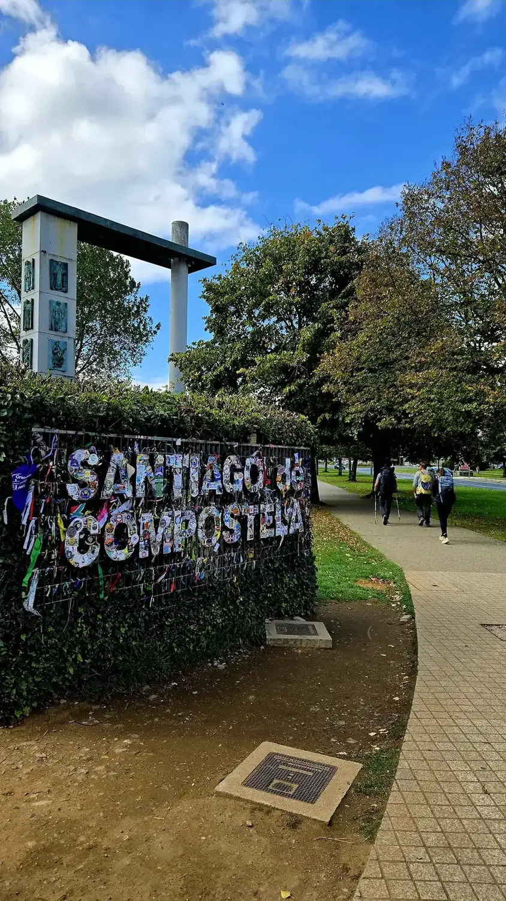

KontaktContact
Start med det som faktisk må løses.Start with what actually needs to be solved.
Deltaker, partner, fagmiljø eller mulig finansiør? Første samtale kan være kort og uforpliktende. Målet er å forstå behovet og finne et riktig neste steg.Participant, partner, professional community or potential funder? The first conversation can be short and without commitment. The goal is to understand the need and find the right next step.

PartnerdialogPartner dialogue
Fortell kort hvilket behov dere ser, hvilken målgruppe det gjelder og hva dere håper en liten pilot kan lære. Vi begynner der.Briefly tell us what need you see, which target group it concerns and what you hope a small pilot could teach us. We begin there.
Start en partnerdialogStart a partner dialogueInteresse som deltakerParticipant interest
Du trenger ikke formulere hele historien din. Skriv kort hva du er nysgjerrig på. Vi kan begynne med en enkel samtale om hva du ønsker – og om dette kan passe for deg.You do not need to formulate your whole story. Write briefly what you are curious about. We can begin with a simple conversation about what you want – and whether this could suit you.
Ta kontaktGet in touchDirekte kontaktDirect contact
La oss begynne med en samtale.Let us begin with a conversation.
sander@aidme.no
Bergen · Norge · Norway